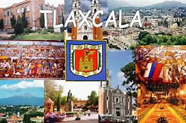
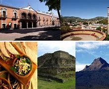

Lugares Turisticos
- Plaza de la Constitución (Plaza Mayor) - Tlaxcala Capital
Es el corazón del centro histórico de Tlaxcala, rodeada de arquitectura colonial, restaurantes y sitios culturales. Ideal para pasear y conocer la historia local. - Catedral de Tlaxcala
Ubicada en la plaza principal, es una construcción barroca del siglo XVI con detalles artísticos impresionantes. - Ex Convento de San Francisco
Un edificio histórico que ahora es un museo, donde se pueden admirar murales coloniales y aprender sobre la evangelización en la región. - Zona Arqueológica de Cacaxtla
Un sitio prehispánico famoso por sus murales policromados que muestran la vida y mitología de las culturas que habitaron la zona. - Zona Arqueológica de Xochitécatl
Cercano a Cacaxtla, este sitio tiene una pirámide principal y vestigios arqueológicos muy importantes. - Laguna de Acuitlapilco
Un espacio natural ideal para relajarse, hacer picnic o deportes acuáticos, rodeado de paisajes muy bonitos. - Museo de Arte de Tlaxcala (MAT)
Alberga exposiciones de arte contemporáneo y piezas que narran la historia cultural del estado. - Feria de Tlaxcala
Evento anual donde puedes disfrutar de música, gastronomía típica, artesanías y tradiciones. - Museo Taurino
Para los interesados en la tradición taurina, este museo exhibe objetos y documentos relacionados con la tauromaquia en Tlaxcala. - Parque Nacional La Malinche
A las afueras de Tlaxcala, este parque ofrece rutas para senderismo y la posibilidad de escalar el volcán La Malinche.
